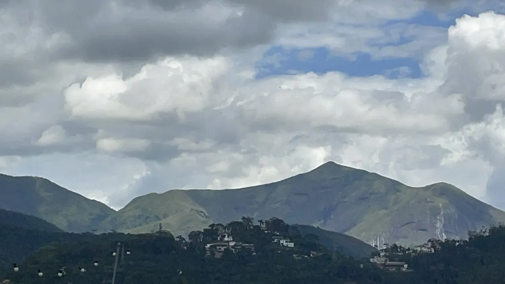

O prazer de aprender, criar e compartilhar.
Guias, ferramentas, projetos e técnicas de marcenaria em português. Um acervo pessoal de descobertas, estudos e experiências que começou em 2020.

Um caderno aberto de marcenaria
A marcenaria é um universo de descobertas. Cada ferramenta, cada técnica e cada projeto trazem novas perguntas, e novas oportunidades de aprender.
Comecei a praticar marcenaria em 2020, como hobby. Desde então, venho reunindo experiências em minha pequena oficina nas montanhas de Petrópolis, participando de cursos, estudando ferramentas e consultando livros, artigos e manuais, muitos deles publicados em outros idiomas.
Criei o Serras & Formas para organizar e compartilhar esse material em português. Aqui você encontrará guias práticos, projetos, estudos sobre ferramentas, traduções comentadas, referências técnicas e relatos do que venho aprendendo.
Não sou marceneiro profissional nem professor de marcenaria. Sou um entusiasta que acredita que o conhecimento se torna mais valioso quando é compartilhado.
Comece pela oficina

Quer montar sua oficina e não sabe por onde começar?
Uma garagem de 6,40 × 2,70 m serve de estudo de caso para discutir layout, circulação, posição das máquinas, bancada, iluminação, energia, armazenamento e controle de pó. Não é um modelo a copiar: é um ponto de partida para pensar no seu espaço.
Ler o guia completo →Explore por assunto
Afiação1
Pedras, ângulos e métodos para um fio que corta sem esforço.
Ferramentas manuais2
Uma a uma: anatomia, escolha, uso e cuidado de cada ferramenta.
Máquinas1
Regulagem, manutenção e segurança das máquinas estacionárias.
Técnicas e encaixes1
Espiga e furo, rabo de andorinha, sashimono e outras uniões.
Madeiras1
Espécies brasileiras e estrangeiras, secagem e madeira de demolição.
Acabamento1
Lixas, óleos, ceras e vernizes.
Oficina3
Bancadas, gabaritos, acessórios e máquinas feitas em casa.
Projetos2
Peças construídas e projetos em andamento, com medidas.
Traduções1
Artigos clássicos e atuais vertidos do inglês para o português.
Formação1
Escolas, cursos e mestres no Brasil e no mundo.
Históriaem breve
A origem das ferramentas, dos fabricantes e dos ofícios.
Glossárioem breve
Vocabulário da marcenaria em português e inglês.
Crônicas1
Histórias de oficina.
Referências48
Mestres, canais, revistas e escolas do mundo todo.
Publicados recentemente
Todos os artigosComo montar sua oficina de marcenaria: o exemplo de uma garagem de 17 m²
Planta, posição de cada máquina, bancada, energia, luz, água, pó e um checklist: o registro de cinco anos montando uma pequena oficina em Petrópolis, com o que faria diferente hoje.
Plainas de metal: princípio, história, regulagem e manutenção
O guia completo das plainas de padrão Stanley/Bailey: como cortam, de onde vem a numeração, Bailey contra Bedrock, tamanhos, regulagem do contra-ferro e da boca, afiação e problemas comuns.
Um rabo de andorinha por dia: o método de prática de Christopher Schwarz
Trinta dias cortando uma junta por noite: a ideia de prática deliberada de Schwarz e as quatro mudanças que ele diz terem melhorado seus rabos de andorinha.
Afiação de formões e plainas pelo método do Morito
Costas primeiro, bisel a 30° e um microbisel um grau acima: uma escola de afiação simples, repetível e de origem japonesa.
Regulagem da serra de fita, do volante às guias
A ordem certa para alinhar a lâmina, tensionar, ajustar guias e esquadrejar a mesa — e por que quase toda deriva nasce de uma regulagem fora de sequência.
Lixas: grãos, abrasivos e a sequência que economiza tempo
Do grão 40 ao 400: o que cada faixa faz, como não pular etapas e quais linhas de lixa em folha existem no Brasil.
Em preparação
Pautas planejadas, ainda não publicadas.
- Técnicas · Em preparaçãoCinco exercícios para aprender a usar a plainaPráticas progressivas para desenvolver controle e precisão.
- Máquinas · Em preparaçãoSerra de fita: rodas, tensão e alinhamento de uma Harvey HW616Manutenção completa da serra de fita da oficina, passo a passo.
- Técnicas · Em pautaTábuas de corte com curvas acentuadasComo pensar gabaritos e sulcos usando a tupia laminadora.
- Projetos · PlanejadoConstrução de uma pequena mesaNotas e decisões de projeto, da madeira ao acabamento.
- Madeiras · PlanejadoComo escolher e armazenar madeiraUmidade, empenamento, movimentação e organização do estoque.
- Glossário · Em construçãoVocabulário da marcenaria em português e inglêsTermos técnicos de ferramentas, encaixes e operações.
Onde aprender marcenaria
Minha recomendação mais importante para quem está começando: procure aulas práticas com orientação de profissionais. Estas são referências para explorar; confirme diretamente com cada escola as turmas, os requisitos e a disponibilidade.
Marcenaria fina, projetos e cursos presenciais.
Site e cursosSanto Antônio do Pinhal, SPMorito EbineAfiação, encaixes tradicionais e trabalho com madeira maciça.
Site e cursosNova Friburgo, RJRicardo Graham Ferreira · oEbanistaWorkshops de encaixes e ebanisteria.
Site e cursosCampo Alegre, SCMarcenaria do Bosque · Lucas PuttiniMarcenaria tradicional e ferramentas manuais.
Site e cursosBarueri, SPEscola da Marcenaria · Leo MadeirasCursos para iniciantes, ferragens, projeto e montagem.
Site e cursosBarra da Tijuca, Rio de Janeiro, RJVinícius CarvasReferência pessoal de curso realizado; programação atual a confirmar.
Agenda a confirmarSegurança em primeiro lugar
A marcenaria envolve ferramentas cortantes, máquinas de alta rotação, poeira e outros riscos que podem provocar acidentes graves.
Os conteúdos deste site são registros de estudo e experiência pessoal. Não substituem cursos presenciais, treinamento supervisionado, manuais dos fabricantes ou orientações de profissionais qualificados. Cada leitor é responsável por avaliar os riscos e trabalhar dentro dos limites de sua formação e experiência.
Recomendo fortemente fazer cursos de marcenaria antes de operar máquinas, conhecer os procedimentos de segurança de cada equipamento e utilizar os equipamentos de proteção individual adequados à atividade.
Aprender a trabalhar com segurança faz parte da própria arte da marcenaria.